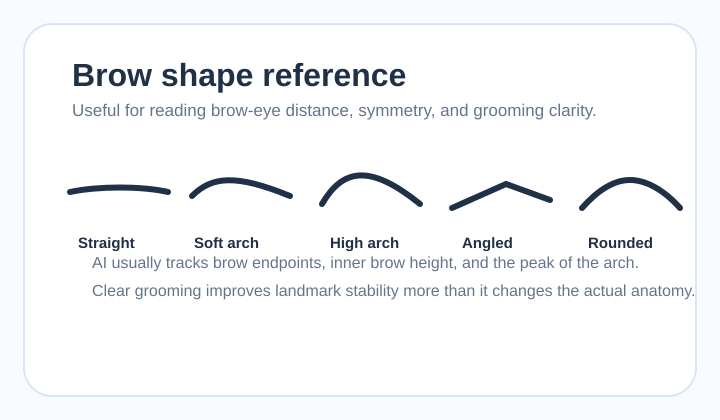

Pillar 4 Support Page
眉毛の形 美人ガイド｜眉間距離・眉山・眉と目の距離を中立解説
眉毛は骨格以上に「フレーム」を作るパーツです。このページでは、眉間距離、眉山、眉と目の距離を、優劣ではなく見え方の要素として整理し、AIがどこを見ているかを説明します。
眉ランドマークが安定しそうかを見る
片眉だけ前髪で隠れる、眉尻が薄く消える、照明で片側だけ飛ぶと、眉の左右差が読み取りにくくなります。比較前に読みやすさをそろえておくと便利です。
眉毛はなぜスコアに効くのか
眉毛は目の上にあるため、目元の印象と対称性をまとめて調整するフレームになります。目そのものの形が同じでも、眉と目の距離、眉間距離、眉山の位置で「きりっと見える」「やわらかく見える」「左右差が気になる」といった印象差が出やすくなります。AIにとっても、眉は目の上側の基準線として働くため、ランドマークの安定性に関わりやすい領域です。

眉間距離はどんな印象を作る？
眉間距離が狭く見えると、視線が中央に集まりやすく、きりっとした印象が出やすいことがあります。広めに見えると、やわらかさや抜け感が出る場合があります。ただし、どちらが良いという話ではありません。前髪やノーズシャドウの有無でも中央の密度感は変わるため、眉間距離だけを独立して解釈するのは危険です。
眉と目の距離は何を変える？
眉と目の距離が近いと、目元が引き締まって見えることがあります。距離が離れると、開放感ややわらかさが出る場合があります。これも顔型、まぶた、額の高さとの組み合わせで印象が変わるため、固定的な理想値はありません。AIはこの距離を目元の縦バランスとして扱うことがあります。
眉山と眉尻の形はどう読む？
眉山がはっきりすると角度感が出やすく、ゆるやかだとやさしい印象になりやすいです。眉尻は輪郭の終わりを示すため、片側だけ消えると左右差が大きく見えます。メイクで最も印象が動きやすい領域でもあり、比較するときは眉メイクをそろえておくと、元の骨格差と演出差を分けて読みやすくなります。
眉を整えると何が変わる？
眉を整えると変わるのは、主に読み取りやすさと印象のフレームです。骨格そのものは変わりませんが、眉山と眉尻が明確になると、AIが点を置きやすくなり、左右差の読みが安定することがあります。実践寄りの整え方は 顔面偏差値を上げる方法 で他パーツと一緒に確認できます。